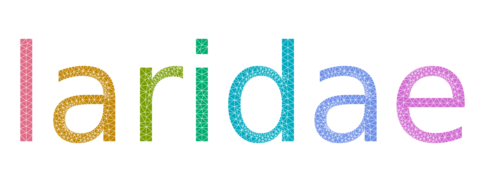
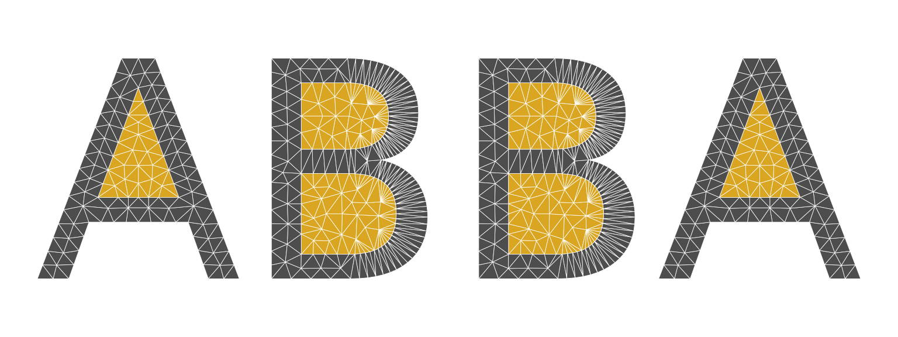
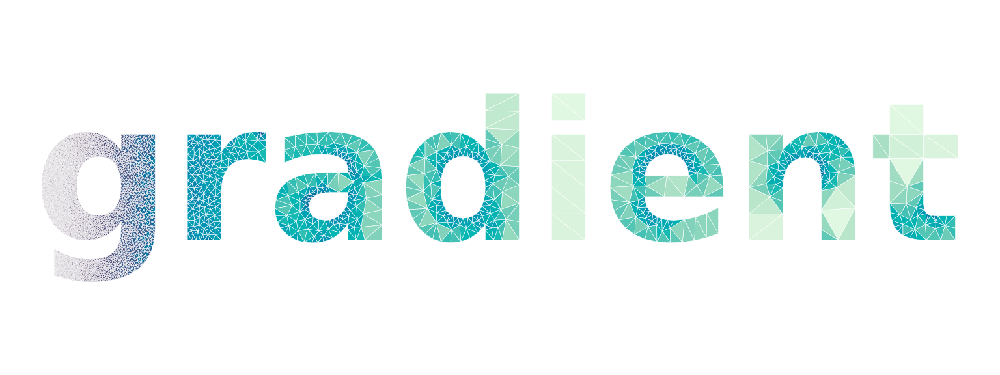
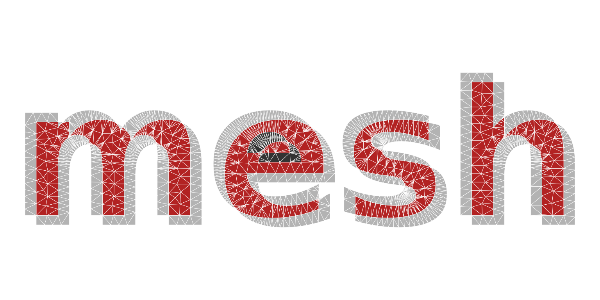
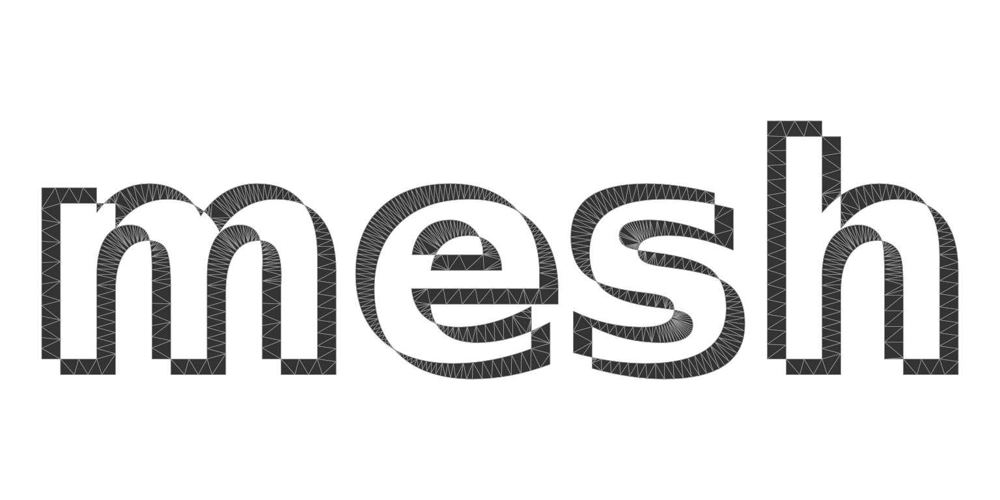

A letter is a polygon with holes: an outer ring for the shape and an inner ring for each counter (the enclosed space in A, B, O, 8, g). That is exactly what a constrained triangulation is built for, so laridae can turn any text in any installed font into a mesh for design work: shading, sizing fields, overlaps, extrusion, or as a domain for a field on a mesh.
The outlines come from the font itself.
lari_text_outline() shapes the string with ‘textshaping’
(kerning, ligatures and font fallback included) and flattens each
glyph’s curves with systemfonts::glyph_outline(). Both
packages are only suggested by laridae.
library(laridae)
o <- lari_text_outline("ABO")
head(o)
#> x y glyph ring char
#> 1 0.2080156 0.5048438 1 1 A
#> 2 0.4760781 0.5048438 1 1 A
#> 3 0.3417969 0.8676719 1 1 A
#> 4 0.3979531 0.9648438 1 2 A
#> 5 0.6757812 0.2358438 1 2 A
#> 6 0.5732500 0.2358438 1 2 A
## one ring per contour: A has a counter, B has two
tapply(o$ring, o$char, max)
#> A B O
#> 2 3 2Coordinates are in ems (set em to scale them), so
max_area and tolerance mean the same thing for
every font.
A small helper draws all triangles in one polygon()
call, filled by a per-triangle colour.
plot_tri <- function(r, col = "grey85", border = "white", lwd = 0.4) {
V <- r$vertices
T <- r$triangles
idx <- rbind(T$v0, T$v1, T$v2, NA)
op <- par(mar = rep(0.2, 4))
on.exit(par(op))
plot(range(V$x), range(V$y), type = "n", asp = 1, axes = FALSE, xlab = "", ylab = "")
polygon(V$x[idx], V$y[idx], col = col, border = border, lwd = lwd)
}Letters
lari_text() meshes each glyph and binds the tables, with
a glyph and char column so each letter can be
treated on its own.
r <- lari_text("laridae", max_area = 0.0015, min_angle = 25)
nrow(r$triangles)
#> [1] 1729
table(r$triangles$char)
#>
#> a d e i l r
#> 778 339 339 68 64 141
plot_tri(r, col = hcl.colors(7, "Dark 3")[r$triangles$glyph])
The counters are holes because only odd constraint depth is kept
(erase = "holes"): the orientation of the rings does not
matter, so a font that winds its contours either way gives the same
letters. With erase = "outer" the counters are meshed too
and depth tells them apart.
r <- lari_text("ABBA", erase = "outer", max_area = 0.002)
plot_tri(r, col = c("grey30", "goldenrod")[r$triangles$depth])
Sizing fields
Any sizing field of lari_refine() works: here the
largest allowed triangle area grows steeply from left to right across
the word, and the triangles are shaded by their area.
r <- lari_text("gradient", weight = "bold", tolerance = 0.01,
size = function(x, y) 2e-5 + 1e-3 * x^3, min_angle = 25)
V <- r$vertices
T <- r$triangles
area <- abs((V$x[T$v1] - V$x[T$v0]) * (V$y[T$v2] - V$y[T$v0]) -
(V$x[T$v2] - V$x[T$v0]) * (V$y[T$v1] - V$y[T$v0])) / 2
pal <- hcl.colors(64, "Mako")
plot_tri(r, col = pal[cut(log(area), 64)], border = "white", lwd = 0.3)
Overlaps
With merge = TRUE all glyphs go into one mesh, so where
they overlap the constraints cross and the depth stacks. Two copies of a
word, slightly offset, show the overlap as depth 2: kept with
erase = "outer", or cut away (an exclusive-or of the two)
with the default erase = "holes".
o <- lari_text_outline("mesh", weight = "bold")
o2 <- transform(o, x = x + 0.06, y = y - 0.05, glyph = glyph + max(o$glyph))
both <- rbind(o, o2)
r <- lari_glyphs(both, merge = TRUE, erase = "outer", max_area = 0.002)
plot_tri(r, col = c("grey70", "firebrick", "grey20", "firebrick")[r$triangles$depth])
r <- lari_glyphs(both, merge = TRUE, max_area = 0.002)
plot_tri(r, col = "grey20", border = "grey60")
Other outline sources
lari_glyphs() takes any data frame of rings with
x, y and glyph and ring ids, so outlines from
other tools mesh as they are. The output of
string2path::string2path() (columns glyph_id,
path_id) and of systemfonts::glyph_outline()
(glyph, contour) are recognised, and a ring
may repeat its first vertex or not. (string2path is not currently on
CRAN; it installs from https://yutannihilation.r-universe.dev, and the chunk
below only runs when it is installed.)
font <- systemfonts::match_fonts("serif")$path
d <- string2path::string2path("Rings", font)
r <- lari_glyphs(d, max_area = 0.002, min_angle = 30)
plot_tri(r, col = "grey95", border = "grey30")